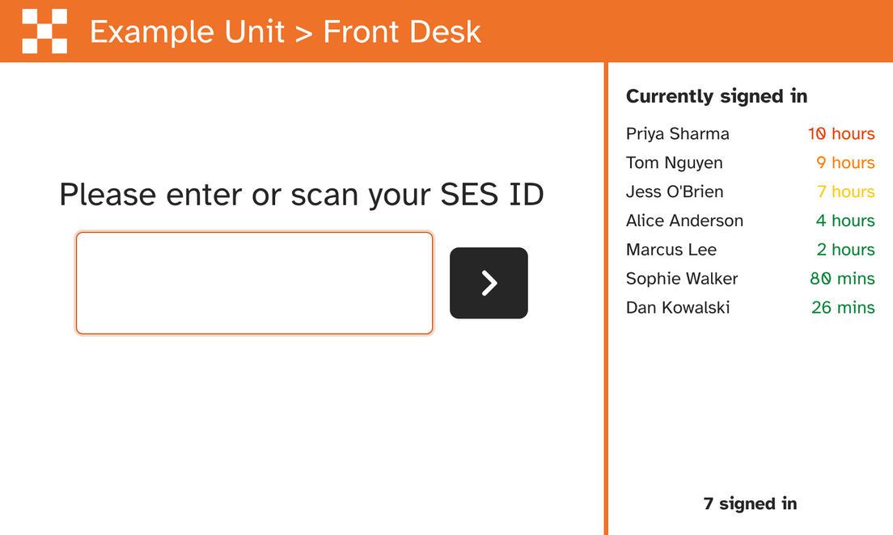
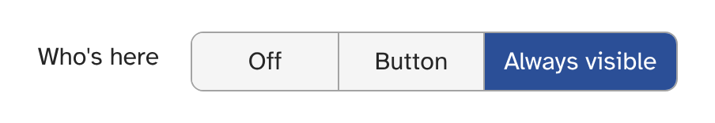

| Your kiosks can now show who's signed in at your unit, and for how long, without anyone pressing a button. | ||
|
||
See who's here at a glanceYour sign-in kiosks can now show a list of who's currently signed in at your unit, right beside the sign-in screen. Set the kiosk's Who's here option to Always visible and the list stays on screen permanently, so anyone walking past can see who's in without pressing anything.
 A kiosk with Who's here set to Always visible. Names are examples. How to turn it on
 A kiosk that's switched on picks up the change straight away; one that's off gets it the next time it connects. The option is set separately for each kiosk and appears for kiosks in Scan mode. Prefer to keep the screen clear? Choose Button instead, which adds a button to the sign-in screen that opens the list when needed.
|
||
|
Questions, problems or feedback? Just reply to this email. Your reply opens a support ticket with the SES Activity team, so you can report an issue, tell us what you think of a change, or ask for help, and we'll get back to you. Thanks for everything you do for your unit. |
||
|
You're receiving this email because you are an administrator in SES Activity. Feature update emails are sent automatically to all SES Activity administrators. NSW SES Volunteers — SES Activity — seslogin.com |